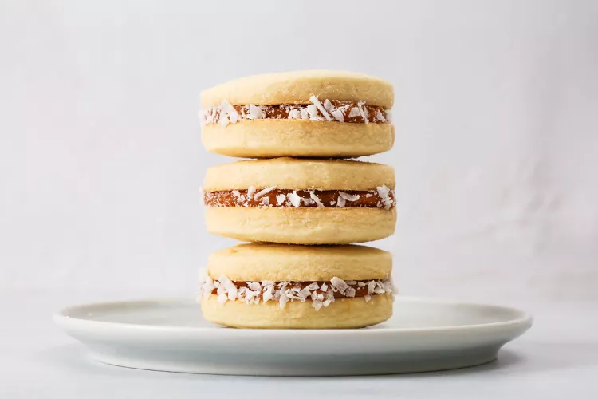

Alfajores
Description
This gooey-sweet treat burst onto the food scene in Argentina in a tourist town called Mar del Plata. Tourists brought them home to share with friends and family, and naturally, the irresistible cookies immediately caught on.
Ingredients
- 1 3/4 cups cornstarch
- 120 grams (about 1 cup) all-purpose flour, more as needed
- 1/2 teaspoon baking powder
- 1 teaspoon salt
- 1 cup (8-ounces) room-temperature unsalted butter, cut into small pieces
- 1/2 cup confectioners' sugar
- 1 to 2 tablespoons pisco, or brandy, more as needed
- 1 teaspoon pure vanilla extract
- 1 cup homemade or store-bought dulce de leche
- 1/2 cup sweetened shredded dried coconut
Steps
- Place the cornstarch, flour, baking powder, and salt in a bowl and mix to combine.
- Add butter to the flour mixture, blending with your fingers until the mixture is smooth (see note in Step 3 about using stand mixer as an alternative).
- Add the powdered sugar, pisco, and vanilla. Combine with your hands until a smooth dough forms. Add another tablespoon or two of pisco if the dough is too crumbly to form a ball. Alternatively, use a stand mixer with the paddle attachment on low speed; this will cut the prep time down by about half. Shape the dough into a disk, wrap, and let the dough rest, refrigerated, for 30 minutes.
- Meanwhile, position a rack in the center of the oven and heat to 350 F. Lightly flour a work surface. Roll out dough to 3/8" thickness, and cut into 2-inch circles. Combine and re-roll the scraps, continuing to cut cookies until the dough is finished.
- Place cookies on a baking sheet lined with parchment paper or a silicone baking mat.
- Bake cookies one sheet at a time until the edges begin to turn golden brown, rotating the tray halfway through for 15 to 17 minutes total. Let cookies cool 5 minutes, then transfer to rack to cool completely.
- To fill the cookies, spread one cookie with dulce de leche.
- Top with a second cookie to make a sandwich. Roll the edges in the coconut, sprinkling more over the edges if the coconut doesn't adhere easily.
Notes
Cutting cold butter into 1/2-inch pieces will allow it to reach room
temperature in 10 to 15 minutes.
As an alternative to rolling out the dough and cutting with a cookie
cutter, roll the dough into a 2-inch diameter cylinder. Wrap it in
cling wrap and freeze for 30 minutes. Then unwrap, and with a sharp
knife slice 3/8-inch-thick cookie rounds and bake as directed above.
Because the cookies are fragile, piping the dulce de leche filling
onto the cookie works best. Place the filling in a small zip-top bag,
snip a 1/2-inch piece from a corner, and fill the cookie, starting at
the outer edge and working towards the center.
Use as little flour as possible when re-rolling dough scraps because
the cookies will become dense and tough.